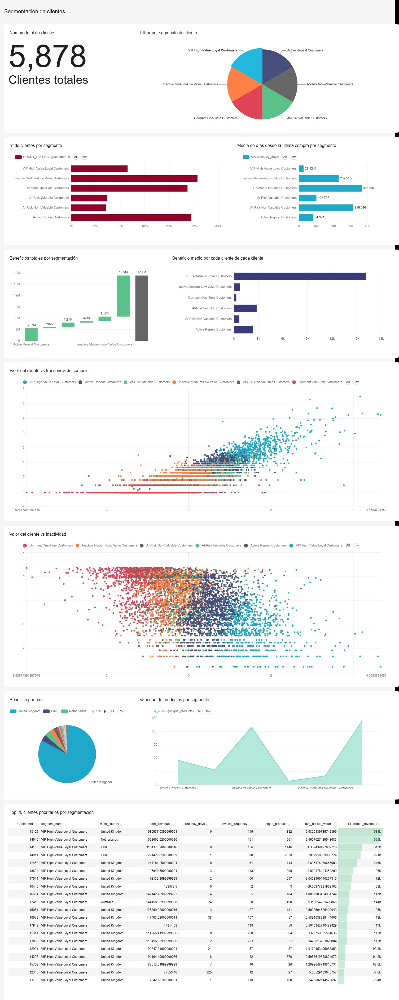
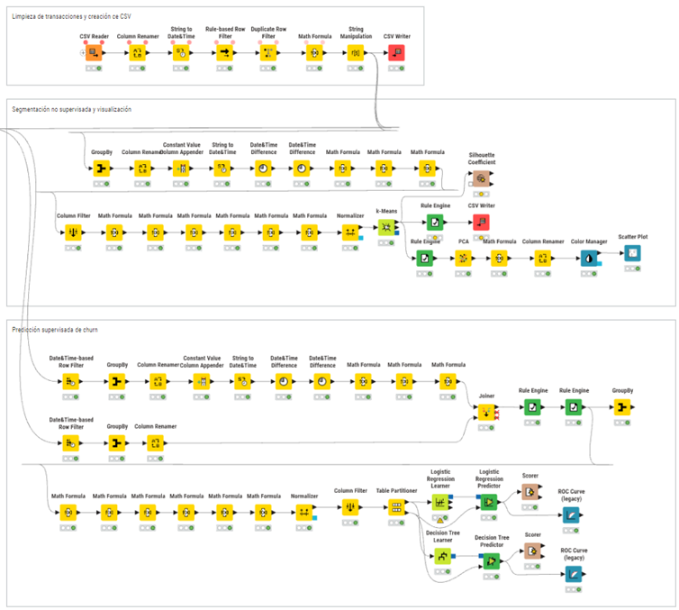
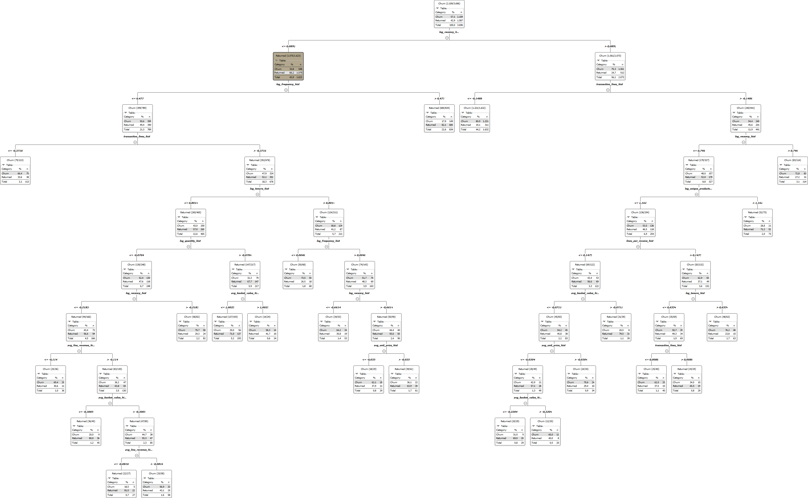

Análisis de Datos e Inteligencia de Negocio · 2025–2026
Análisis de clientes con KNIME: del dato a la decisión
Pipeline end-to-end para segmentar clientes, estimar valor, detectar riesgo de abandono y convertir el análisis en acciones de marketing y retención.
Se conserva el proyecto final de analítica de clientes. La documentación de la asignatura y los materiales de enunciado no se incluyen.
Puntos destacados
Lo más interesante del trabajo.
Cómo se trabajó
Del problema al resultado.
Preparación del dato
Limpieza de cancelaciones, clientes desconocidos, duplicados y registros inválidos; cálculo de variables económicas y temporales.
Segmentación
Construcción de tabla RFM con métricas de comportamiento, normalización y k-Means con seis clusters.
Predicción de churn
Cutoff temporal, ventana futura de 90 días y comparación de regresión logística frente a árbol de decisión.
Decisión CRM
Scoring de clientes y recomendaciones de win-back, fidelización, cross-selling o automatización según valor y riesgo.
Evidencias visuales
Parte del trabajo realizado.



Stack y conceptos
Herramientas y competencias
Entregables seleccionados